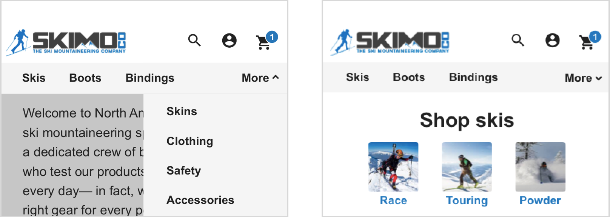
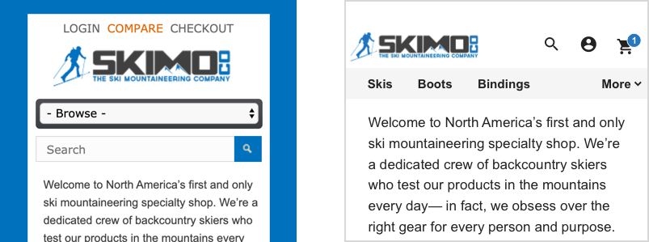
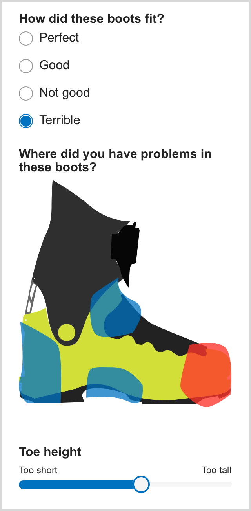

The long version
I started working at Skimo with the intention to build a tool to help people find ski objectives. For the sport of rock climbing, an app called Mountain Project has created a central database for climbing routes all over the world. Nothing like that exists for skiers which makes planning a trip to a different mountain range is time consuming and difficult. That was the problem we wanted to solve.
In my first week, I conducted interviews with people of all ages and ski abilities. The biggest thing I found was the features we thought were important didn’t matter to users. The only thing they cared about was the quality and quantity of information. They wanted to know things like average slope angle, current conditions, trip reports from other people, and many other things to help them figure out where to ski.
From the information gathered in these interviews, we simplified the app. We threw out feature ideas that weren’t focused on providing information to users. I designed an MVP that would be consistent with how the rest of the website looked. With this plan in place, I developed the HTML and CSS of the site while Jason, the owner of Skimo Co, worked on the backend.
While I was excited about the project, I knew that the design of Skimo Co’s website could be much better. I also found through research that visual design was potentially holding them back. I heard people talk about how the site wasn’t trustworthy, how they wouldn’t buy based on the design of the website.
Jason was kind enough to let me tackle the whole website and let me develop the changes I made. The three biggest problems I saw:

This was a hard problem to fix with design. In user interviews, I saw that navigating the site on mobile was quite difficult. I thought a hamburger menu would fix some of the problems but realized it would also cause a big one. Hamburger menus hide links that users need to navigate the site. Hiding the wrong things could decrease sales. And yet, showing too many things wouldn't work on mobile.
I came up with a compromise called Smart Menu. It shows as many links as it can while hiding the rest in a menu. This allows skis, boots, and bindings to be shown on most browsers and devices, while still making it easy to find everything else.
Once you hit each category, for instance ‘skis’, it takes you to a landing page where you can see links to the subcategories and more information that helps the user become more informed about their purchase. It also gives Skimo Co the chance to better market special deals or certain brands to its users.

The background of Skimo’s current website is a bright blue. This causes a lot of issues. First, it contributes to the dated look a lot of people are mentioning. Second, on mobile, it prevents about 60px of space from being shown, making images and text smaller than that would be otherwise. For this, all we did was get rid of it and change the margin. Super easy change that went a long way.

Skimo users a lot of forms to collect information from customers. For instance, if a customer is in the market for new boots, we will send them a form to get more information about how they ski and what boots they have used before.
The problem is that these forms were massive. From talking to our sales team, I learned that users would only fill in a small portion of the form, which meant a lot more back and forth emailing. We wanted users to fill in the entire form, as users who do so are more likely to buy.
I sat down with Jason and got rid of everything we could in the form. We made it as simple as possible to help users finish it. In addition to getting rid of fields, I redesigned some fields to be easier to use. One example is what you see to your left, the boot. The boot is used to help customers show where previous boots gave them problems. Before users had to tell us how each area of the boot fit, which was very time consuming. Now, users simply click on which part of the boot gave them trouble and adjust the sliders that pop up below.
I ran through this prototype with customers. I noticed an issue in my tests where users didn't understand what they were supposed to do initially but then after some time really liked the concept. To counter this, we simply added text above the boot telling them to click on the areas that gave them trouble. This simple change tested much better with users, and I believe will make this work very well. Time will tell.
Skimo's site was completely redesigned. While it is still in development, things are finishing up and will be released to the public this summer. It will take a year to find out the effects of the site, but so far things look very positive. I am very proud of this project and mostly proud of Skimo Co. In a world where many companies fail, Skimo Co has built a large business on something they love to do. To me, that is the definition of success.
.png)